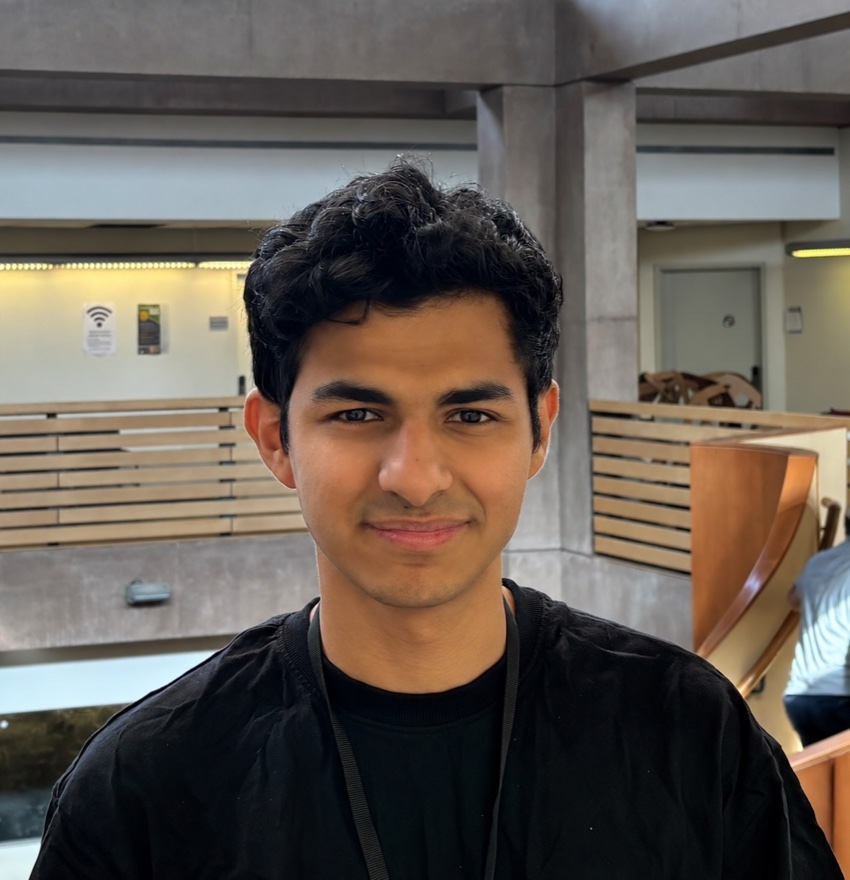

Ayush Nangia

I work on agent evaluation and post-training, with a focus on long-horizon tasks.
Currently, I'm a SPAR fellow and work with Jinesis AI Lab on post-training and AI safety.
In the past, I have done research at Proximal, Lossfunk, Toronto Metropolitan University through Mitacs, and Wadhwani AI.
If you're working on agent evaluations or post-training, get in touch.
Work
Writing
-
{% assign technical = site.posts | where: 'kind', 'technical' | first %}
{% assign essay = site.posts | where: 'kind', 'essay' | first %}
- Technical{{ technical.title | escape }}
- Essays{{ essay.title | escape }}